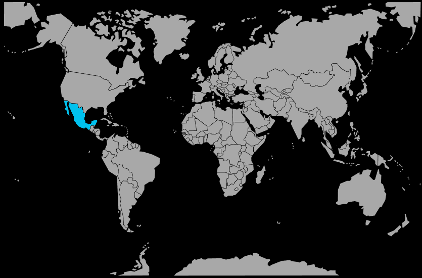

Systématique
- Ordre : Cyprinodontiformes
- Famille : Poeciliidae
- Genre : Poecilia
- Espèce : Poecilia velifera

Poecilia velifera, le molly voile du Yucatán, est un grand vivipare dont les mâles peuvent dépasser 12 cm et les femelles atteindre 15 à 18 cm en bonnes conditions.
La caractéristique la plus marquante est la très haute nageoire dorsale du mâle, en forme de voile largement déployé, souvent associée à un corps tacheté ou ponctué de reflets bleus, verts ou orangés selon les souches.
L’espèce vit en groupes près de la surface et du milieu de la colonne d’eau, où elle passe une grande partie de la journée à brouter les algues et à filtrer les particules en suspension.
Les mâles sont actifs et passent beaucoup de temps à parader devant les femelles en déployant leur voile, ce qui peut fatiguer les femelles si le groupe n’est pas assez grand ou le volume insuffisant.
Globalement pacifique, le molly voile peut cependant impressionner par sa taille et sa vivacité; il est préférable de l’associer à des espèces calmes mais de gabarit comparable, dans un aquarium spacieux et bien filtré.
Mode : ovovivipare; le mâle féconde la femelle grâce à un gonopode, puis celle‑ci porte les œufs jusqu’à la naissance d’alevins entièrement formés et autonomes.
La gestation dure en moyenne 4 semaines à température élevée; une femelle mature peut produire plusieurs dizaines de jeunes par portée, voire davantage pour les plus gros individus.
Comme chez les autres mollys, les adultes ne protègent pas leur progéniture et peuvent manger une partie des alevins; la présence de nombreuses plantes, racines et zones calmes permet aux jeunes de se cacher et d’atteindre une taille plus sûre.
Dimorphisme sexuel : le mâle est plus coloré, avec une nageoire dorsale très haute et un gonopode; la femelle est plus massive, plus longue et présente une dorsale nettement plus basse et arrondie.
Espérance de vie : en aquarium, les Poecilia velifera vivent en général 3 à 5 ans, parfois un peu plus si le volume, la dureté de l’eau et l’hygiène du bac sont bien adaptés à leurs besoins.
Dans la nature, l’espèce est étroitement liée aux zones côtières peu profondes de la péninsule du Yucatán, où elle occupe lagunes, marais salés, canaux de mangrove, estuaires et cénotes côtiers.
L’eau y est le plus souvent saumâtre à légèrement salée, avec un courant très faible, une forte luminosité et une végétation abondante (plantes aquatiques, plantes palustres, racines de mangrove, algues).
Répartition

Origine naturelle :
- Péninsule du Yucatán au Mexique, sur la côte caraïbe et le golfe du Mexique.
- Présent dans diverses lagunes et zones côtières de faible altitude, souvent à proximité de mangroves.
L’espèce a été introduite dans plusieurs pays tropicaux ou subtropicaux où elle peut se maintenir dans les eaux chaudes, parfois en dehors de son biotope saumâtre d’origine.
Paramètres de maintenance
Température : 25 à 28 °C, avec une préférence pour une eau stable et bien oxygénée.
pH : 7,5 à 8,5, nettement alcalin.
GH : 13 à 25 °dGH, eau dure à très dure; une eau trop douce fragilise rapidement l’espèce.
Salinité : l’ajout de sels spécifiques ou d’un peu de sel marin (eau légèrement saumâtre) est souvent bénéfique pour la santé et la longévité.
Courant : faible à modéré, avec une filtration puissante capable de gérer une forte production de déchets, mais sans créer de remous excessifs en surface.
Volume conseillé : au minimum 300 L pour un petit groupe (au moins un trio ou un harem), avec une façade d’au moins 120 cm pour que les grands mâles puissent nager et déployer leur voile sans gêne.
Régime alimentaire
Régime : omnivore à dominante herbivore; dans le milieu naturel, le molly voile broute les algues, le périphyton et la microfaune fixée sur les surfaces, complétés par de petits invertébrés.
En aquarium, il apprécie les aliments secs de qualité (paillettes, granulés) riches en végétaux, complétés par des apports de spiruline, légumes pochés finement coupés (courgette, épinard, concombre) et des proies vivantes ou congelées.
Un apport régulier en végétal fibreux limite les problèmes digestifs et d’embonpoint, fréquents chez les gros vivipares, et aide à maintenir de belles couleurs et une croissance harmonieuse.